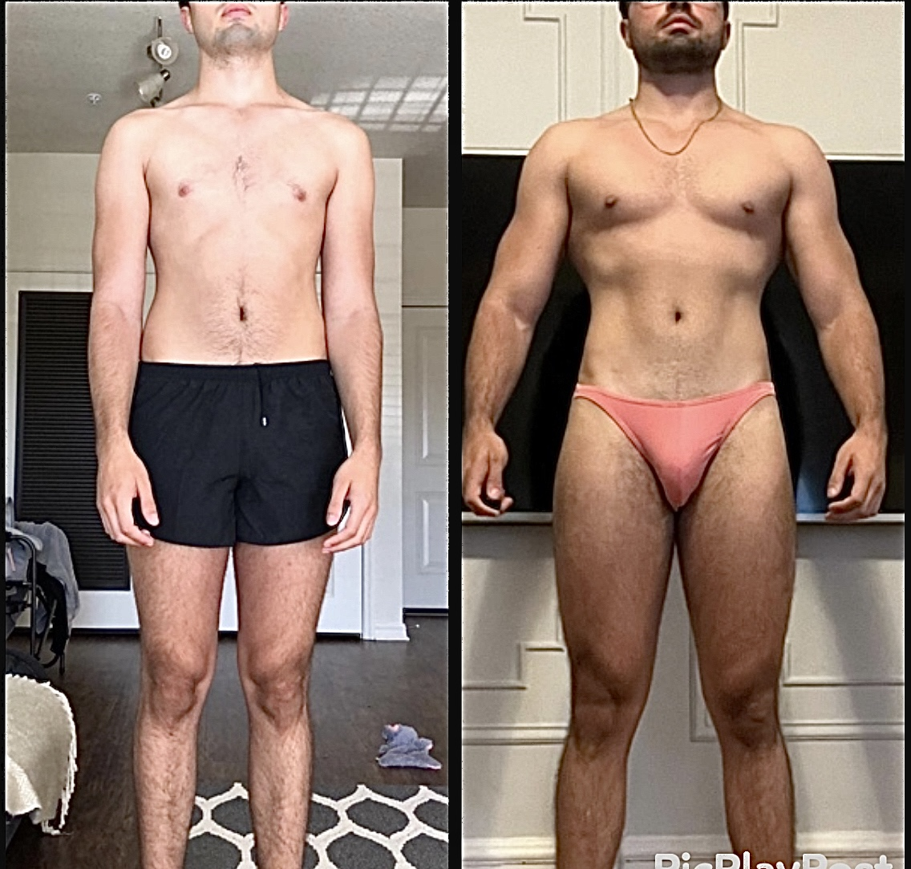
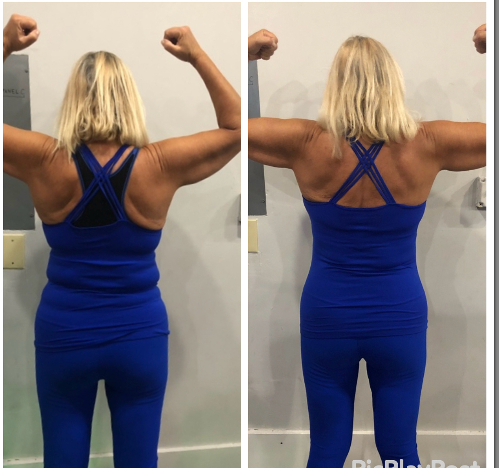
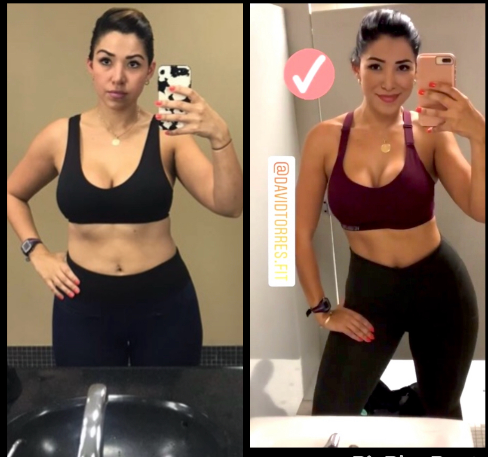
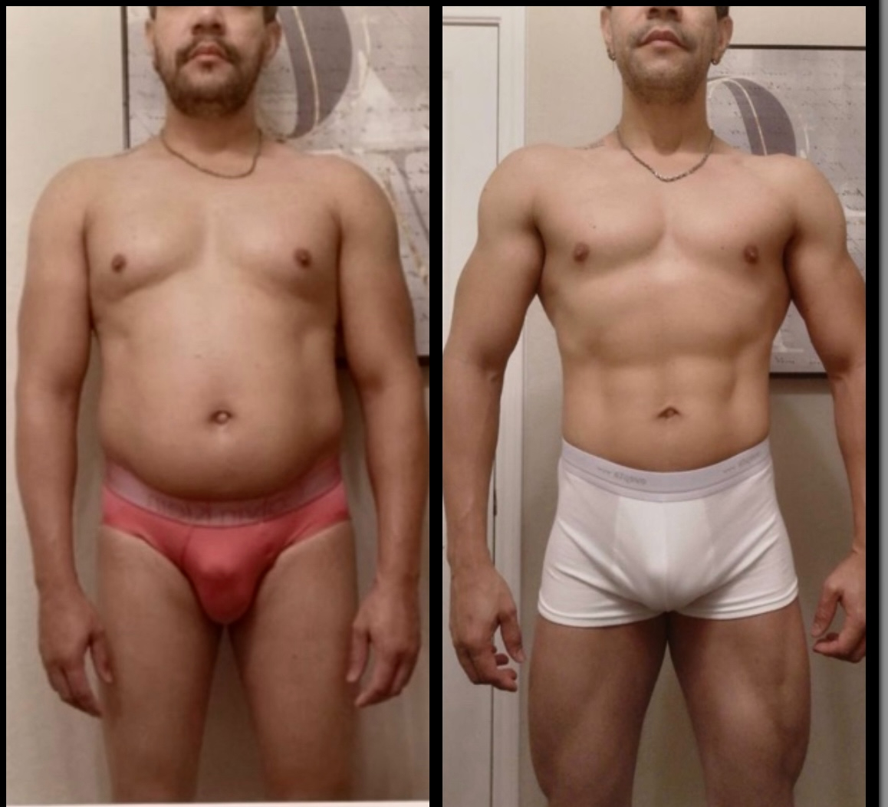

.png)
.png)

Morbi maximus velit sit amet risus interdum, ut iaculis nunc suscipit. Cras luctus, eros aliquam fringilla eleifend, risus enim euismod neque, vel fermentum risus purus vel lorem. Morbi justo diam, ultrices ut lobortis nec, hendrerit quis neque. Orci varius natoque penatibus et magnis dis parturient montes, nascetur ridiculus mus. Vivamus suscipit orci vel risus mollis, vel iaculis odio fermentum. Ut sagittis dolor quis sapien interdum, eu auctor dui feugiat. In hac habitasse platea dictumst. Curabitur dictum urna et urna auctor, non elementum purus ullamcorper.
Morbi maximus velit sit amet risus interdum, ut iaculis nunc suscipit. Cras luctus, eros aliquam fringilla eleifend, risus enim euismod neque, vel fermentum risus purus vel lorem. Morbi justo diam, ultrices ut lobortis nec, hendrerit quis neque. Orci varius natoque penatibus et magnis dis parturient montes, nascetur ridiculus mus. Vivamus suscipit orci vel risus mollis, vel iaculis odio fermentum. Ut sagittis dolor quis sapien interdum, eu auctor dui feugiat. In hac habitasse platea dictumst. Curabitur dictum urna et urna auctor, non elementum purus ullamcorper.

Felipe. “Es el mejor entrenador que pude encontrar. Inicié mi proceso porque era muy delgado y mi objetivo desde siempre fue subir masa muscular, con todos los consejos y guía de David lo logré. No es fáci porque requiere de mucha disciplina y compromiso, pero David siempre me esta guiando de su mano, y esta pendiente de cada detalle, de como voy con las comidas, de corregirme la técnica …. No solo es un gran entrenador personal que realmente se preocupa de sus clientes si no que también es un excelente ser humano !! 100/10
Lili Mi vida, Mente y fisico dieron un giro totalmente positivo Al comenzar a entrenar con David, a nivel professional guiada por un ser humano integro y dedicado totalmente a su profession El que hace ameno y facil El cambio de actitud a personas como yo que nunca habia hecho ejercicio, David nos cambia de adentro hacia afuera, a mis 62 años comenzo mi cambio y fue la mejor desicion que he tomado en mi vida, 💪gracias por tu dedication David💪


Carolina Páez Hay personas que llegan a tu vida con un propósito y David fue una de ellas. Me ayudo a crear la consciencia de lo que comía y el efecto que hacía en mi cuerpo. Ahora mantengo un estilo de vida balanceando y logre mejorar mi apariencia física con ejercicio y alimentación cuando en algún momento pensé que mi mejor opción era la Cirugia. Gracias david con cada cambio aumente mi seguridad y confianza . Me ayudo a evolucionar y a buscar una mejor versión de mi cada día por que el tiene el balance de lo físico y lo espiritual. Por eso lo recomiendo por que es la mejor inversión que estarás haciendo para ti. Carolina Paez since March 2018 🤗
Carlos Medina Hace 6 meses decidí cambiar mi cuerpo y con el pasar de los días cambio mucho, y sin darme cuenta mi forma de pensar también cambio y esto gracias a @davidtorres.fit el cual a sido una guía motivaciónal al mil por ciento lo recomiendo a ojos cerrados y pasó de ser mi coach a se mi amigo.. Yo quiero Yo puedo.

Simon I meet David about 3 Years ago at a time where I lost hope in trainers and transforming my body. Before I meet David I had 5 trainers that got me no results. I started to believe that my body can’t grow further than what I have. David has changed my perception on trainers he’s absolutely phenomenal hes the first trainer to get me to my dream goal finally he gave me a meal plan and a workout regiment that really worked for my body type. I will definitely continue to workout with David for many more years to come